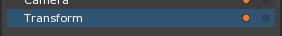
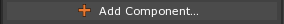
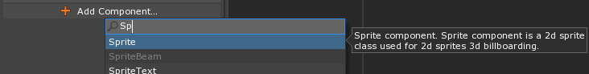
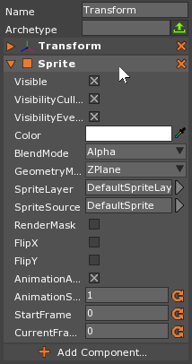
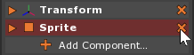
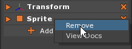

Adding & Removing Components
Add a Component
Basics of how to add a component to an object.
Select the object to which you want to add the
component
Your object should be displayed when selected
- In the Properties Window
- Click the  button
This brings up the Add Component drop down:

- Start typing the name of the
componentyou want to add:

Notice that :cpp:type:`component<Component>` options appear in the drop down selection
- Click on desired
componentto add it to the object
In the Properties Window, we can see that component was successfully added:

Remove a Component
Removing a component.
Select the object from which you want to remove the
component
Your object should be displayed when selected
You may remove a component in either of two ways.
- Using the “X” Button
In the Properties Window
- Click the “X”-shaped button on the right side of the
componentto be removed

- Click the “X”-shaped button on the right side of the
- Using the Right-Click Submenu
In the Properties Window
Right-click the
componentto be removedIn the Right-Click Submenu
- Click Remove
